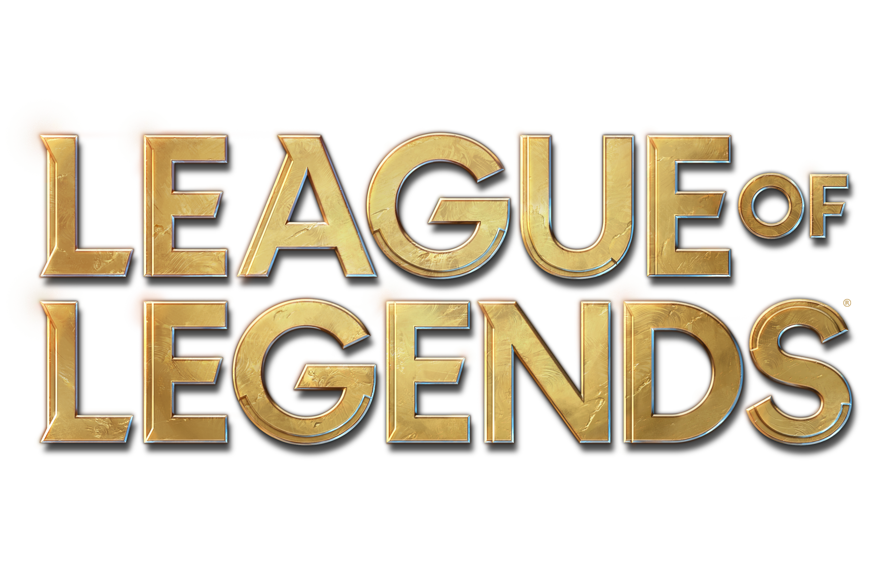

Estrategia
Cada partida requiere tomar decisiones, planificar movimientos y aprovechar las oportunidades para conseguir ventajas sobre el equipo rival.
Todo sobre League of Legends

League of Legends, conocido también como LoL, es un videojuego multijugador de estrategia y competencia desarrollado por Riot Games. Dos equipos de cinco jugadores se enfrentan con el objetivo de destruir el Nexo enemigo, ubicado en la base rival.
Cada jugador controla un campeón con habilidades particulares. Para conseguir la victoria es necesario combinar estrategia, coordinación, conocimiento del mapa y trabajo en equipo.
Cada partida requiere tomar decisiones, planificar movimientos y aprovechar las oportunidades para conseguir ventajas sobre el equipo rival.
Los jugadores ponen a prueba sus habilidades frente a otros equipos, buscando mejorar su rendimiento y alcanzar nuevas posiciones en las clasificatorias.
La coordinación entre los cinco integrantes es fundamental. Cada posición cumple una función importante durante el desarrollo de la partida.
La Grieta del Invocador es el mapa principal de League of Legends. Se encuentra dividido en tres líneas y una zona de jungla, donde los equipos deben competir por el control del territorio.
Es el camino superior del mapa. Generalmente se enfrentan campeones resistentes o luchadores capaces de combatir individualmente.
Se encuentra en el centro del mapa. Es una posición estratégica que permite desplazarse rápidamente hacia otras zonas y colaborar con el equipo.
Es una línea compartida normalmente por dos jugadores: el tirador y el soporte. Ambos deben coordinarse para controlar la zona y conseguir ventajas.
Es el espacio ubicado entre las líneas. Allí se encuentran monstruos neutrales y objetivos que pueden proporcionar ventajas importantes para el equipo.
Cada equipo cuenta con cinco jugadores que ocupan diferentes posiciones. Sus responsabilidades cambian según las necesidades de la partida.
Se ocupa de la línea superior. Suele utilizar campeones luchadores o tanques que pueden resistir enfrentamientos.
Recorre la jungla, elimina monstruos neutrales y ayuda a sus compañeros mediante intervenciones en las líneas.
Controla la línea central. Suele utilizar magos o asesinos capaces de generar daño y participar en otras zonas del mapa.
Es el tirador del equipo. Su función principal es causar daño constante, especialmente durante los enfrentamientos grupales.
Acompaña al tirador y brinda asistencia al equipo mediante protección, control de enemigos y visión del mapa.
League of Legends cuenta con una amplia variedad de campeones. Cada uno posee habilidades, características y estilos de juego diferentes.
Son personajes resistentes que pueden recibir grandes cantidades de daño y proteger a sus compañeros.
Utilizan habilidades mágicas para causar daño, controlar enemigos o brindar apoyo.
Se especializan en eliminar objetivos importantes rápidamente, aprovechando su movilidad y daño explosivo.
Combinan resistencia y capacidad ofensiva para enfrentarse directamente a sus adversarios.
Se caracterizan por realizar daño físico a distancia, principalmente mediante ataques básicos.
Sus habilidades están orientadas a proteger, curar, controlar o facilitar las acciones de sus compañeros.
Además de enfrentarse a los campeones enemigos, los equipos deben conseguir diferentes objetivos que permiten obtener ventajas estratégicas.
Son monstruos neutrales que proporcionan mejoras permanentes al equipo que consigue derrotarlos.
Es uno de los objetivos más importantes del mapa. Su eliminación proporciona una mejora que fortalece a los integrantes del equipo.
Son estructuras defensivas que protegen las líneas y las bases. Destruirlas permite avanzar hacia el territorio enemigo.
Es la estructura principal de cada base. Destruir el Nexo rival es el objetivo final para ganar una partida.
Permiten jugar sin competir directamente por una posición en el sistema de clasificatorias.
Son partidas competitivas en las que los jugadores buscan mejorar su clasificación y alcanzar divisiones superiores.
Es un modo de juego rápido en el que los diez jugadores se enfrentan en una única línea, con campeones seleccionados aleatoriamente.
La estrategia, la paciencia y el trabajo en equipo son fundamentales para alcanzar la victoria.
Completá tus datos para conocer un poco más sobre tu perfil de jugador.